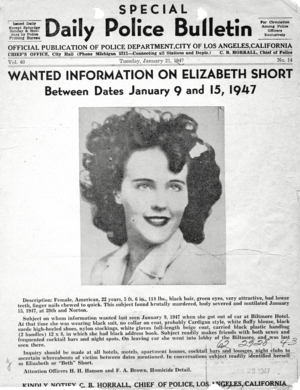

블랙달리아 사건은 1947년 1월 미국 로스엔젤레스에서 당시 22세의 여성 엘리자베스 쇼트가 끔찍하게 살해당한 엽기살인사건이다.
쇼트는 1947년 1월 15일 로스앤젤레스 레이머트 공원에서 허리가 잘려서
상반신과 하반신이 분리된 시체로 발견되었다.
엘리자베스 쇼트는 보스턴 출신이지만 초기 생애를 매사추세츠주 메드퍼드와 플로리다주에서 보냈으며,
이후 부친이 살던 캘리포니아주로 이주했다. 당시 배우지망생이었다고 하지만 어떤 작품에도 출연한 바가 없고
따로 직업이 있지도 않았다. 그는 평생 "블랙달리아(Black Dahlia)"라는 별명으로 불린 적이 없었고,
이 별명은 쇼트 사후에 범죄 사건에 별명을 붙이기 좋아하던 신문들이 피해자 쇼트에게 붙인 것이다.
아마 사건 발생 한 해 전에 개봉한 누아르 영화 『블루달리아』에서 비롯된 것이라고 여겨진다.
시신이 발견된 이후 로스앤젤레스 시경찰국은 광범위한 수사를 펼쳐 150명 이상의 용의자를 추적했으나 한 명도 체포하지 못했다.
블랙달리아 사건은 미국 역사상 유명한 미해결 범죄 중 하나이며,
동시에 로스앤젤레스군에서 가장 오래된 미해결 범죄다.
역사학자들은 이 사건을 제2차 세계대전 이후 미국에서 전국적 주목을 받은 최초의 살인사건으로 평가한다.
